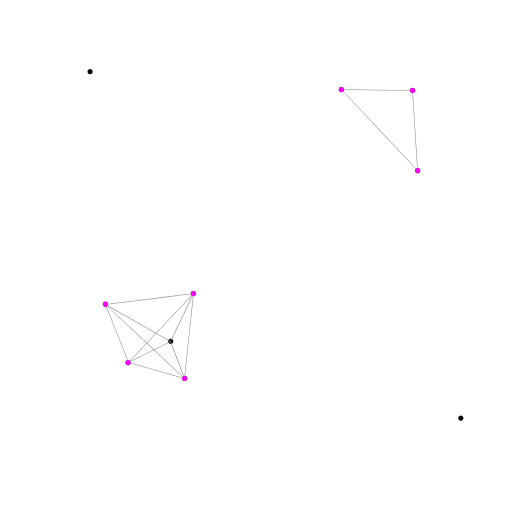

In this homework, you will be guided to learn:
1. How to draw points in a 2-dimensional plane;
2. How to use 'compareTo';
3. How to find convex hull vertices;
Assignment: HW5-0 (practice by yourself)
1. 利用StdRandom產生N個2D points (用Point2D的array來儲存)，再搭配StdDraw把這個N個點畫出來(radius= 0.01)
2. 找到y座標最小的點，改成用紅色(RED)畫點
3. 以紅點為基礎(p)，計算其他點與紅點的角度，按照角度排序(逆時鐘)
Assignment: HW5-1
Write a function that takes an array of N points as the input, and return its convex hull vertices
HW5-1 不需要讀檔，批改系統會批改 MyConvexHull.java 裡的 ConvexHullVertex，請計算 Point2D[] a 的 convex hull，並且回報形成 convex hull 的點在原本 a 陣列中的 index（從 0 開始）
Assignment: HW5-2
Implement MyConvexHull.java
The main function of the source code "MyConvexHull.java" must read in a input file (Input file example：data.in), of which the first line specifies the maximum distance (d) to union two points, the second line specifies the number of points (N).
followed by the coordinates of the N points, and output the number of points in N serving as a convex hull vertex for any connected components.
HW5-2 需要讀檔，批改系統會批改 MyConvexHull.java 的 main。測資的第一行會是一個距離（小數）d，第二行會是一個整數 N，代表有測資有幾個點（點的座標會在 0-1 之間）。其中任兩點若距離不大於 d，則此兩點需要被建立連接。所有連接在一起的點則會產生 connected component。如下圖所示：

請計算各個 connected component 的 convex hull，並且輸出形成這些 convex hull 的點的個數的總和。
注意：可以使用 StdDraw 來利用繪圖檢視自己的程式碼是否有誤，但在上傳到批改系統時，請移除所有與繪圖有關的程式碼。
The source code "MyConvexHull.java" must have a function named "ConvexHullVertex" that takes in an array of 2D points and return a int[] of the set constituting the convex hull:
public class MyConvexHull {
public static int[] ConvexHullVertex(Point2D[] a) {
// 回傳ConvexHullVertex的index set，index 請依該點在a陣列中的順序編號：0, 1, 2, 3, 4, ....a.length-1
}
public static void main(String[] args) {
// 1. read in the file containing N 2-dimentional points
// 2. create an edge for each pair of points with a distance <= d
// 3. find connected components (CCs) with a size >= 3
// 4. for each CC, find its convex hull vertices by calling ConvexHullVertex(a[])
// 5. count the number of points in N serving as a convex hull vertex, print it
}
}
Example input:
0.35
10
0.200 0.250
0.147 0.387
0.300 0.300
0.333 0.213
0.353 0.412
0.700 0.890
0.879 0.700
0.867 0.888
0.980 0.120
0.111 0.932
Example output:
7